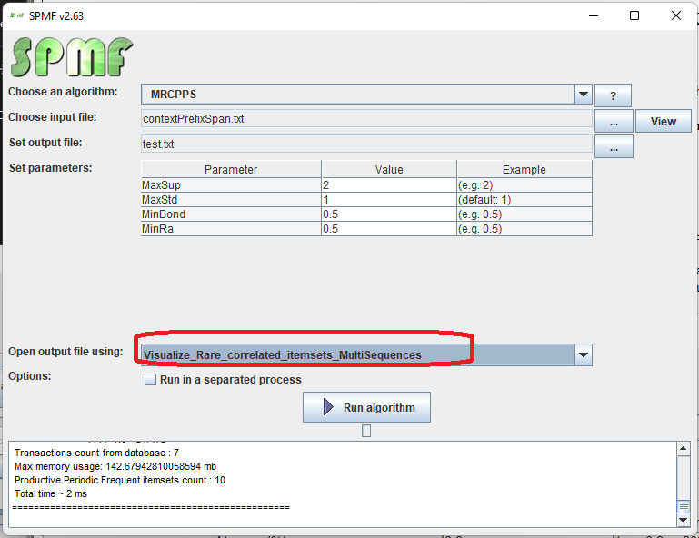
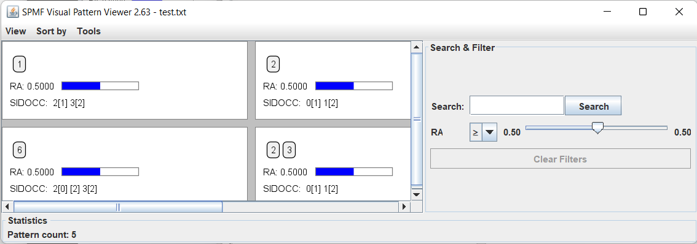

View rare correlated itemsets (from multiple sequences) with the Visual Pattern Viewer (SPMF documentation)
Rare correlated itemsets (from multiple sequences) are a type of patterns that can be produced by different algorithms offered in SPMF.
This page explains how to visualize the rare correlated itemsets (from multiple sequences) found by an algorithm using the Visual Pattern Viewer.
How to run this example?
If you want to run this example using the graphical user interface of SPMF, follow these steps.
1) First, select a rare correlated itemset (from multiple sequences) mining algorithm offered in SPMF. Several algorithms are offered and are described in the documentation of SPMF.
2) Then, in the user interface of SPMF, after selecting an algorithm and setting its input file path, output file path, and parameters, click on the combo-box besides "Open output file using:", and select "Visualize_Rare_correlated_itemsets_MultiSequences" so that the discovered patterns will be opened with the visual pattern viewer.

3) Then click on "Run algorithm" to run the algorithm.
After the algorithm terminates, the discovered patterns will be displayed using the Visual Pattern Viewer:

The Visual Pattern Viewer interface is quite intuitive. It displays each pattern with its value for each evaluation measure using a colored bar.
The Visual Pattern Viewer offers several features such as:
- Viewing patterns using different layouts (grid, horizontal and vertical layout).
- Sorting patterns by size and measure values.
- Searching and filtering using measure values
- Displaying statistics about the number of patterns found.
Other ways of running the Visual Pattern Viewer
It is also possible to run the Visual Pattern Viewer as an algorithm from the GUI of SPMF..
In this case, in the user interface of SPMF, select "Visualize_Rare_correlated_itemsets_MultiSequences" as algorithm. Then, select a file containing rare correlated itemsets (from multiple sequences) as input file. Then, click "run algorithm".
This will display the patterns from the file using the Visual Pattern Viewer.
Besides, it is also possible to call the Visual Pattern Viewer from the command line interface of SPMF. To open a file called patternsRareCorrelatedItemsetsMultipleSeq.txt, this syntax can be used:
java -jar spmf.jar run Visualize_Rare_correlated_itemsets_MultiSequences patternsRareCorrelatedItemsetsMultipleSeq.txt in a folder containing spmf.jar and the input file.
What is the input file format?
The algorithm takes as input a file containing rare correlated itemsets (from multiple sequences).
The file format is defined as follows. It is a text file, where each line represents a rare correlated itemset. The first two lines are metadata indicating the type of patterns in this file and the source of the data. Then the following lines provide the list of patterns. On a line, the items of the itemset are first listed. Each item is represented by an integer separated by a space. After, that the keyword #RA: appears followed by a double value indicating the RA value of the pattern. Then, the keyword #SIDOCC: appears followed by an integer representing a sequence identifier and the list of itemsets where the pattern appears between squared brackets. For example, this is a file containing patterns:
@FILETYPE="Rare correlated itemsets common to multiple sequences"
@SOURCE="SPMF SOFTWARE https://philippe-fournier-viger.com/spmf/"
1 #RA: 0.5 #SIDOCC: 2[1] 3[2]
2 #RA: 0.5 #SIDOCC: 0[1] 1[2]
4 #RA: 0.5 #SIDOCC: 1[0] 2[2]
6 #RA: 0.5 #SIDOCC: 2[0] [2] 3[2]
2 3 #RA: 0.5 #SIDOCC: 0[1] 1[2]
Consider the last line. It indicates that the pattern {2,3} is a rare correlated periodic copatterns with a RA of 0.5, and that this pattern is periodic in sequence S0 (the first sequence) and appears in the second itemset of that sequence (denoted as [1]). Moreover, this pattern is periodic in sequence S1 (the second sequence) and appears in the third itemset of that sequence (denoted as [2]).